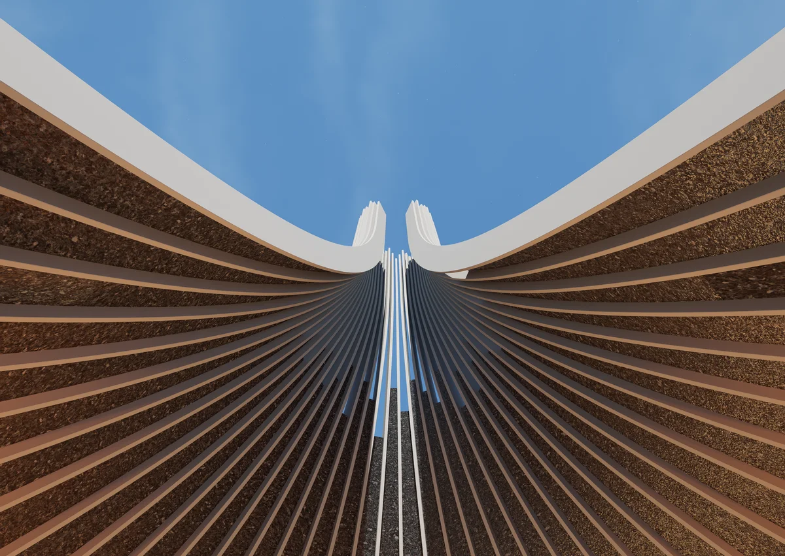
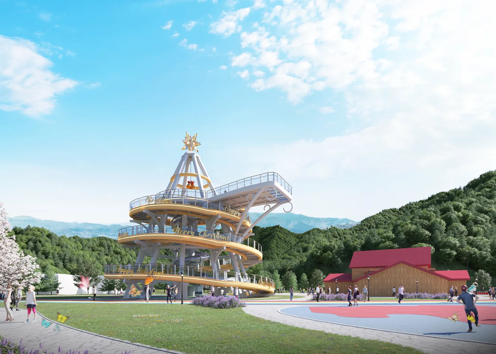
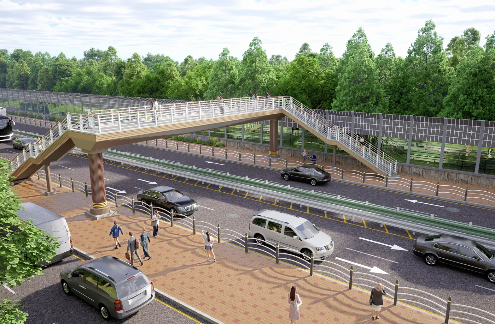
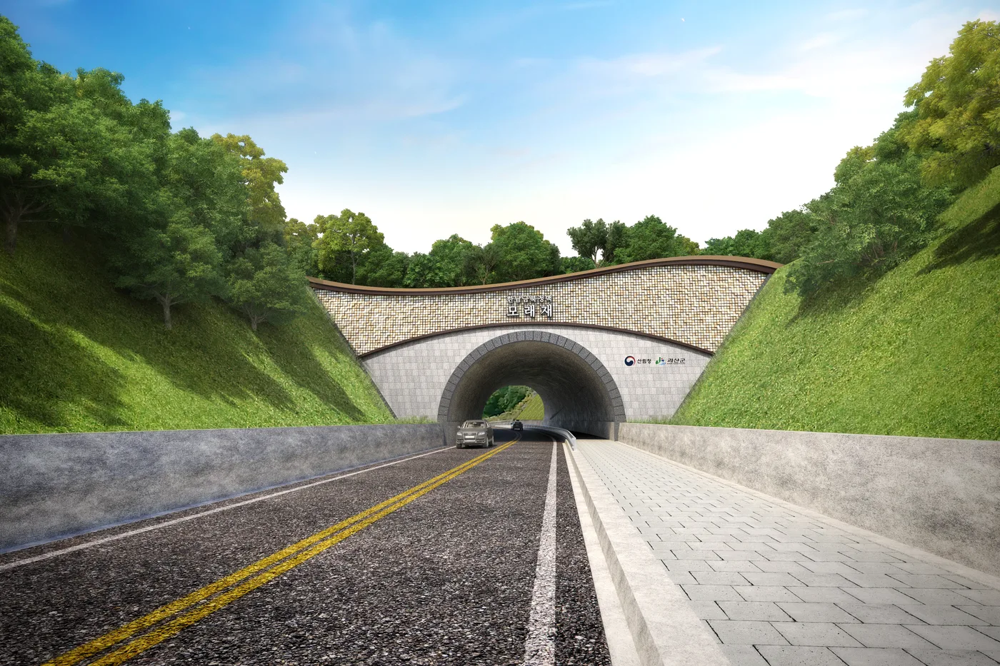
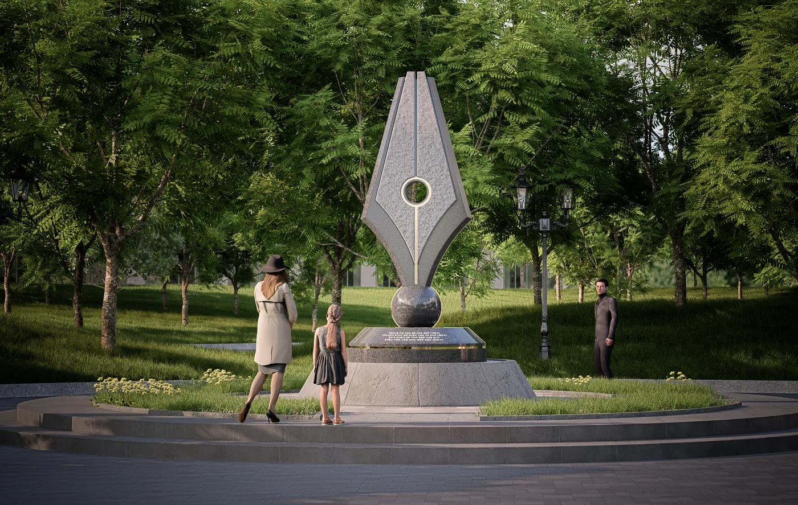
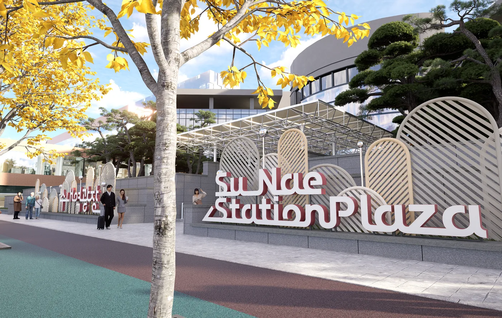
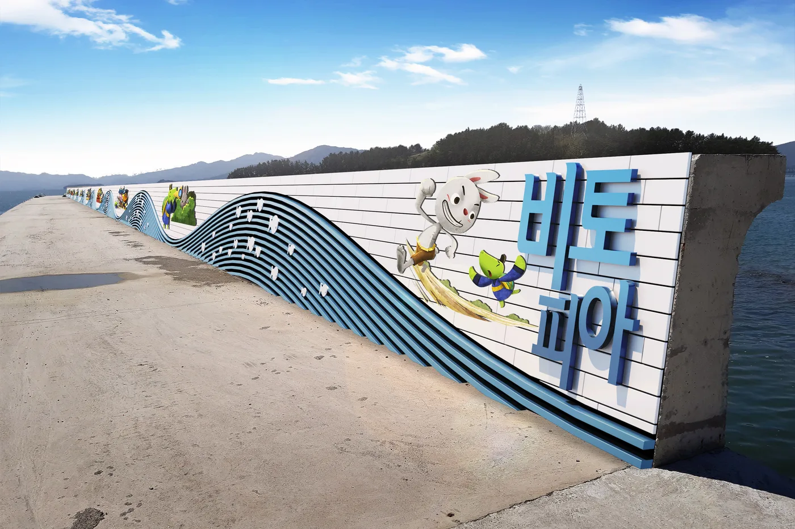
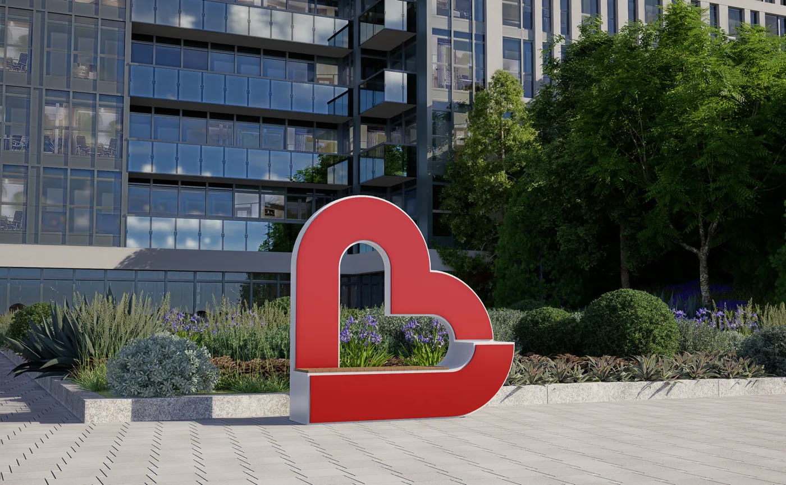
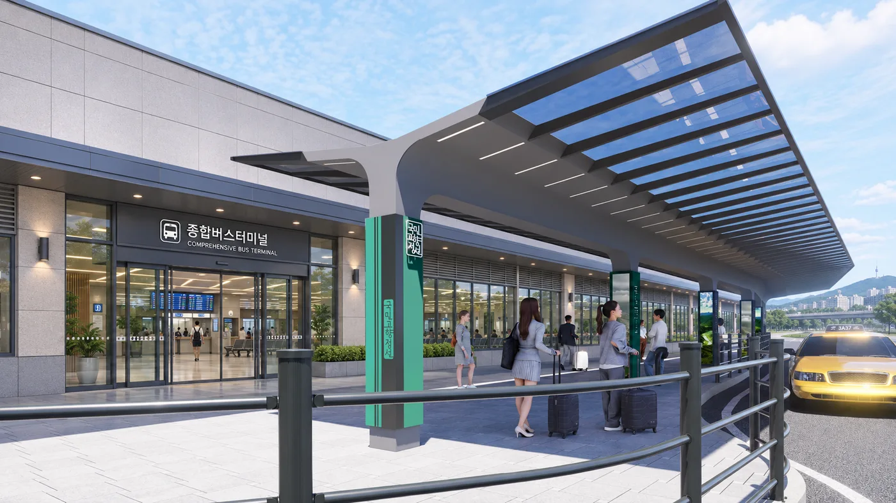

01
공공디자인
PUBLIC
DESIGN
우리가 그린 상상이,
우리 곁의 공간이 됩니다.
기획부터 디자인, 설계, 시공까지.
02
공공디자인 분야








03
원스케이프 디자인 프로세스
현황조사와 경관분석
Research & Analysis
기획·디자인
지역문화조사 · 대상지 답사 · 사례 조사
설계·시공
지역 요구 수렴
기획 전략과 디자인 콘셉트
Strategy & Concept
기획·디자인
디자인 기획 · 콘셉트 및 테마 설정 · 아이디어 구상
설계·시공
규모와 형태에 따른 예산 범위
디자인 개발
Development & Feedback
기획·디자인
형태적 전개, 디자인 도출 · 지자체, 협의체, 전문가 의견 수렴 · 제안서 작성
설계·시공
실현 가능한 디자인 최적화
실현 가능한 창의적 설계
Manufacture Customize
기획·디자인
디자인과 설계의 차이 최소화
설계·시공
현황에 맞는 적정한 자재 선정 · 제작 및 시공 가능한 세부 설계 · 유지보수를 고려한 설계
디자인 가치를 담은 제작/시공
Final Construction
기획·디자인
디자인 제작 및 설치 검수
설계·시공
현장 여건을 고려한 철저한 공정 관리